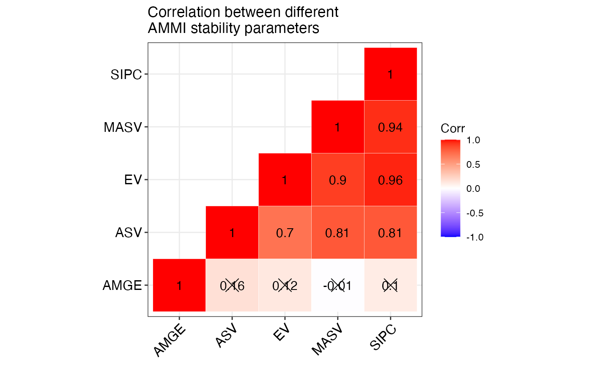
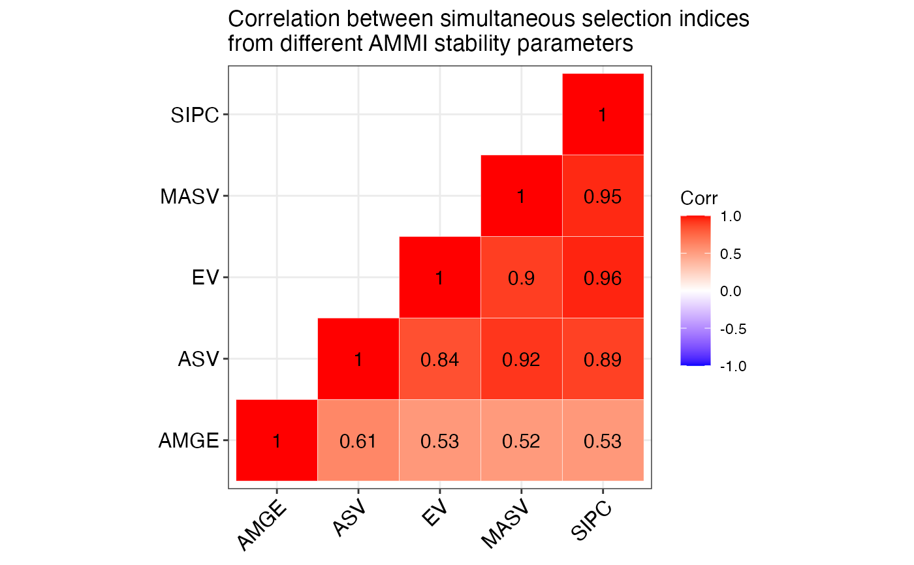
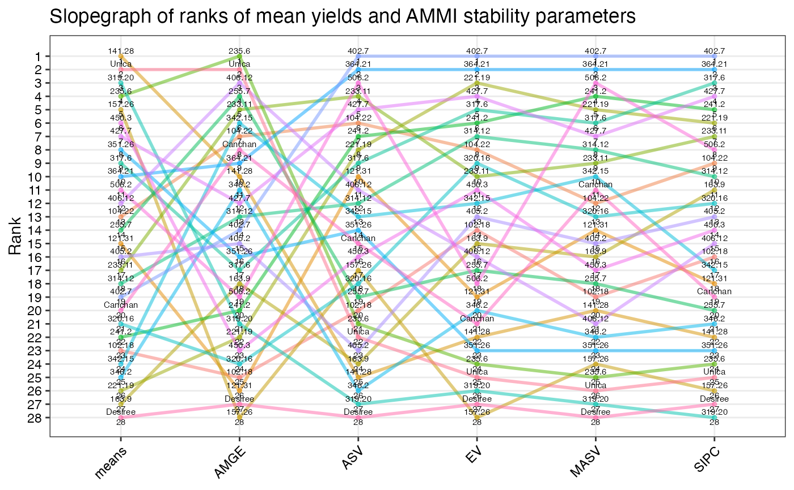
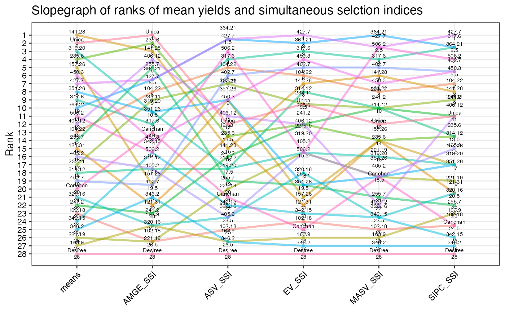

ammistability computes multiple stability parameters from an AMMI
model. Further, the corresponding Simultaneous Selection Indices for Yield
and Stability (SSI) are also calculated according to the argument
ssi.method. From the results, correlation between the computed indices
will also be computed. The resulting correlation matrices will be plotted as
correlograms. For visual comparisons of ranks of genotypes for different
indices, slopegraphs and heatmaps will also be generated by this function.
ammistability(
model,
n,
alpha = 0.05,
ssi.method = c("farshadfar", "rao"),
a = 1,
AMGE = TRUE,
ASI = TRUE,
ASV = TRUE,
ASTAB = TRUE,
AVAMGE = TRUE,
DA = TRUE,
DZ = TRUE,
EV = TRUE,
FA = TRUE,
MASI = TRUE,
MASV = TRUE,
SIPC = TRUE,
ZA = TRUE,
force.grouping = TRUE,
line.size = 1,
line.alpha = 0.5,
line.col = NULL,
point.size = 1,
point.alpha = 0.5,
point.col = NULL,
text.size = 2
)The AMMI model (An object of class AMMI generated by
AMMI).
The number of principal components to be considered for computation. The default value is the number of significant IPCs.
Type I error probability (Significance level) to be considered to identify the number of significant IPCs.
The method for the computation of simultaneous selection
index. Either "farshadfar" or "rao" (See
SSI).
The ratio of the weights given to the stability components for
computation of SSI when method = "rao" (See
SSI).
If TRUE, computes AMGE (see Details). Default is
TRUE.
If TRUE, computes ASI (see Details). n = 2
will be used in this case. Default is TRUE.
If TRUE, computes ASV (see Details). n = 2
will be used in this case. Default is TRUE.
If TRUE, computes ASTAB (see Details). Default
is TRUE.
If TRUE, computes AVAMGE (see Details). Default
is TRUE.
If TRUE, computes DA (see Details). Default is
TRUE.
If TRUE, computes DZ (see Details). Default is
TRUE.
If TRUE, computes EV (see Details). Default is
TRUE.
If TRUE, computes FA (see Details). Default is
TRUE.
If TRUE, computes MASI (see Details). Default is
TRUE.
If TRUE, computes MASV (see Details). Default is
TRUE.
If TRUE, computes SIPC (see Details). Default is
TRUE.
If TRUE, computes ZA (see Details). Default is
TRUE.
If TRUE, genotypes will be considered as a
grouping variable for plotting the slopegraphs. (Each genotype will be
represented by a different colour in the slopegraphs). Default is
TRUE.
Size of lines plotted in the slopegraphs. Must be numeric.
Transparency of lines plotted in the slopegraphs. Must be numeric.
Default is TRUE. Overrides colouring by
force.grouping argument.
Size of points plotted in the slopegraphs. Must be numeric.
Transparency of points plotted in the slopegraphs. Must be numeric.
Default is TRUE. Overrides colouring by
force.grouping argument.
Size of text annotations plotted in the slopegraphs. Must be numeric.
A list with the following components:
A data frame indicating the stability parameters computed and the method used for computing the SSI.
A data frame of computed stability parameters.
A data frame of computed SSIs.
A data frame of correlation between stability parameters.
A data frame of correlation between SSIs.
A data frame of correlation between stability parameters and SSIs.
Correlogram of stability parameters.
Correlogram of SSIs.
Correlogram of stability parameters and SSIs.
Slopegraph of stability parameter ranks.
Slopegraph of SSI ranks.
Heatmap of stability parameter ranks.
Heatmap of SSI ranks.
ammistability computes the following stability parameters from an AMMI
model.
Sneller et al. (1997)
Jambhulkar et al. (2014); Jambhulkar et al. (2015); Jambhulkar et al. (2017)
Purchase (1997); Purchase et al. (1999); Purchase et al. (2000)
Rao and Prabhakaran (2005)
Zali et al. (2012)
Annicchiarico (1997)
Zhang et al. (1998)
Zobel (1994)
Raju (2002)
Ajay et al. (2018)
Zali et al. (2012); Ajay et al. (2019)
Sneller et al. (1997)
Zali et al. (2012)
Ajay BC, Aravind J, Abdul Fiyaz R, Bera SK, Kumar N, Gangadhar K, Kona P (2018).
“Modified AMMI Stability Index (MASI) for stability analysis.”
ICAR-DGR Newsletter, 18, 4--5.
Ajay BC, Aravind J, Fiyaz RA (2019).
“ammistability: R package for ranking genotypes based on stability parameters derived from AMMI model.”
Indian Journal of Genetics and Plant Breeding (The), 79(2), 460--466.
Annicchiarico P (1997).
“Joint regression vs AMMI analysis of genotype-environment interactions for cereals in Italy.”
Euphytica, 94(1), 53--62.
Jambhulkar NN, Bose LK, Pande K, Singh ON (2015).
“Genotype by environment interaction and stability analysis in rice genotypes.”
Ecology, Environment and Conservation, 21(3), 1427--1430.
Jambhulkar NN, Bose LK, Singh ON (2014).
“AMMI stability index for stability analysis.”
In Mohapatra T (ed.), CRRI Newsletter, January-March 2014, volume 35(1), 15.
Central Rice Research Institute, Cuttack, Orissa.
Jambhulkar NN, Rath NC, Bose LK, Subudhi HN, Biswajit M, Lipi D, Meher J (2017).
“Stability analysis for grain yield in rice in demonstrations conducted during rabi season in India.”
Oryza, 54(2), 236--240.
Purchase JL (1997).
Parametric analysis to describe genotype × environment interaction and yield stability in winter wheat.
Ph.D. Thesis, University of the Orange Free State.
Purchase JL, Hatting H, van Deventer CS (1999).
“The use of the AMMI model and AMMI stability value to describe genotype x environment interaction and yield stability in winter wheat (Triticum aestivum L.).”
In Proceedings of the Tenth Regional Wheat Workshop for Eastern, Central and Southern Africa, 14-18 September 1998.
University of Stellenbosch, South Africa.
Purchase JL, Hatting H, van Deventer CS (2000).
“Genotype × environment interaction of winter wheat (Triticum aestivum L.) in South Africa: II. Stability analysis of yield performance.”
South African Journal of Plant and Soil, 17(3), 101--107.
Raju BMK (2002).
“A study on AMMI model and its biplots.”
Journal of the Indian Society of Agricultural Statistics, 55(3), 297--322.
Rao AR, Prabhakaran VT (2005).
“Use of AMMI in simultaneous selection of genotypes for yield and stability.”
Journal of the Indian Society of Agricultural Statistics, 59, 76--82.
Sneller CH, Kilgore-Norquest L, Dombek D (1997).
“Repeatability of yield stability statistics in soybean.”
Crop Science, 37(2), 383--390.
Zali H, Farshadfar E, Sabaghpour SH, Karimizadeh R (2012).
“Evaluation of genotype × environment interaction in chickpea using measures of stability from AMMI model.”
Annals of Biological Research, 3(7), 3126--3136.
Zhang Z, Lu C, Xiang Z (1998).
“Analysis of variety stability based on AMMI model.”
Acta Agronomica Sinica, 24(3), 304--309.
Zobel RW (1994).
“Stress resistance and root systems.”
In Proceedings of the Workshop on Adaptation of Plants to Soil Stress. 1-4 August, 1993. INTSORMIL Publication 94-2, 80--99.
Institute of Agriculture and Natural Resources, University of Nebraska-Lincoln.
library(agricolae)
data(plrv)
# AMMI model
model <- with(plrv, AMMI(Locality, Genotype, Rep, Yield, console = FALSE))
ammistability(model, AMGE = TRUE, ASI = FALSE, ASV = TRUE, ASTAB = FALSE,
AVAMGE = FALSE, DA = FALSE, DZ = FALSE, EV = TRUE,
FA = FALSE, MASI = FALSE, MASV = TRUE, SIPC = TRUE,
ZA = FALSE)
#> $Details
#> $Details$`Stability parameters estimated`
#> [1] "AMGE" "ASV" "EV" "MASV" "SIPC"
#>
#> $Details$`SSI method`
#> [1] "Farshadfar (2008)"
#>
#>
#> $`Stability Parameters`
#> genotype means AMGE ASV EV MASV SIPC
#> 1 102.18 26.31947 -8.659740e-15 3.3801820 0.0232206231 4.7855876 2.9592568
#> 2 104.22 31.28887 1.110223e-15 1.4627695 0.0175897578 3.8328358 2.2591593
#> 3 121.31 30.10174 4.440892e-16 2.2937918 0.0342010876 4.0446758 3.3872806
#> 4 141.28 39.75624 1.021405e-14 4.4672401 0.0529036285 5.1867706 4.3846248
#> 5 157.26 36.95181 2.220446e-15 3.2923168 0.0965635719 7.6459224 5.4846596
#> 6 163.9 21.41747 -1.243450e-14 4.4269636 0.0236900961 4.4977055 2.6263670
#> 7 221.19 22.98480 -4.440892e-15 1.8014494 0.0127574566 2.1905344 2.0218098
#> 8 233.11 28.66655 2.275957e-15 1.0582263 0.0211138628 3.1794345 2.1624442
#> 9 235.6 38.63477 5.773160e-15 3.7647078 0.0723274691 8.4913020 4.8273551
#> 10 241.2 26.34039 -5.329071e-15 1.6774241 0.0153823821 2.0338659 2.0056410
#> 11 255.7 30.58975 -3.774758e-15 3.3289736 0.0317506280 4.7013868 3.6075128
#> 12 314.12 28.17335 5.773160e-15 2.9170536 0.0170302467 3.1376678 2.4584089
#> 13 317.6 35.32583 2.220446e-15 2.1874274 0.0136347120 2.3345492 1.8698826
#> 14 319.20 38.75767 1.731948e-14 6.7164864 0.0855988994 8.6398087 5.9590451
#> 15 320.16 26.34808 -6.217249e-15 3.3208950 0.0180662044 3.8822326 2.7040109
#> 16 342.15 26.01336 -2.442491e-15 2.9219360 0.0225156118 3.6438425 2.9755899
#> 17 346.2 23.84175 -1.110223e-14 5.1827747 0.0459434537 5.3987165 3.9525017
#> 18 351.26 36.11581 1.021405e-14 2.9786832 0.0639652186 5.4005468 4.5622439
#> 19 364.21 34.05974 1.415534e-15 0.7236998 0.0018299284 1.4047546 0.7526264
#> 20 402.7 27.47748 -3.885781e-16 0.2801470 0.0001339385 0.3537818 0.2284995
#> 21 405.2 28.98663 -1.088019e-14 3.9832546 0.0229492190 4.1095727 2.7952381
#> 22 406.12 32.68323 3.108624e-15 2.5631734 0.0264692745 5.3218165 2.8834753
#> 23 427.7 36.19020 1.110223e-16 1.1467970 0.0135698145 2.4124676 2.0049278
#> 24 450.3 36.19602 6.439294e-15 3.1430174 0.0216161656 4.6608954 2.8200387
#> 25 506.2 33.26623 -5.773160e-15 0.7511331 0.0318266934 1.9330143 2.2178470
#> 26 Canchan 27.00126 9.325873e-15 3.0975884 0.0461305761 3.6665608 3.5328212
#> 27 Desiree 16.15569 -1.132427e-14 7.7833445 0.0901534938 9.0626072 5.8073242
#> 28 Unica 39.10400 5.329071e-15 3.8380782 0.0770659860 8.5447632 5.0654615
#>
#> $`Simultaneous Selection Indices`
#> genotype means AMGE_SSI ASV_SSI EV_SSI MASV_SSI SIPC_SSI
#> 1 102.18 26.31947 28.0 43 37 42 39
#> 2 104.22 31.28887 28.0 19 21 25 22
#> 3 121.31 30.10174 29.0 25 34 29 33
#> 4 141.28 39.75624 27.5 26 23 21 23
#> 5 157.26 36.95181 22.5 22 33 29 31
#> 6 163.9 21.41747 28.0 51 42 43 38
#> 7 221.19 22.98480 35.0 34 29 31 32
#> 8 233.11 28.66655 36.0 21 27 26 24
#> 9 235.6 38.63477 26.5 25 28 29 28
#> 10 241.2 26.34039 30.0 29 28 26 27
#> 11 255.7 30.58975 24.0 33 31 32 34
#> 12 314.12 28.17335 40.5 30 25 26 28
#> 13 317.6 35.32583 26.5 18 14 15 12
#> 14 319.20 38.75767 31.0 30 29 30 31
#> 15 320.16 26.34808 27.0 39 30 34 33
#> 16 342.15 26.01336 35.0 37 36 34 41
#> 17 346.2 23.84175 28.0 51 45 47 46
#> 18 351.26 36.11581 34.5 22 31 31 31
#> 19 364.21 34.05974 26.0 12 12 12 12
#> 20 402.7 27.47748 31.0 20 20 20 20
#> 21 405.2 28.98663 20.0 39 29 31 29
#> 22 406.12 32.68323 32.0 23 28 33 27
#> 23 427.7 36.19020 20.0 12 11 14 11
#> 24 450.3 36.19602 30.0 22 17 23 20
#> 25 506.2 33.26623 18.0 14 29 14 19
#> 26 Canchan 27.00126 45.0 35 41 31 39
#> 27 Desiree 16.15569 30.0 56 55 56 55
#> 28 Unica 39.10400 23.0 24 27 28 27
#>
#> $`SP Correlation`
#> AMGE ASV EV MASV SIPC
#> AMGE 1.00** <NA> <NA> <NA> <NA>
#> ASV -0.03 1.00** <NA> <NA> <NA>
#> EV 0.31 0.70** 1.00** <NA> <NA>
#> MASV 0.21 0.81** 0.90** 1.00** <NA>
#> SIPC 0.28 0.81** 0.96** 0.94** 1.00**
#>
#> $`SSI Correlation`
#> AMGE ASV EV MASV SIPC
#> AMGE 1.00** <NA> <NA> <NA> <NA>
#> ASV 0.20 1.00** <NA> <NA> <NA>
#> EV 0.24 0.84** 1.00** <NA> <NA>
#> MASV 0.23 0.92** 0.90** 1.00** <NA>
#> SIPC 0.32 0.89** 0.96** 0.95** 1.00**
#>
#> $`SP and SSI Correlation`
#> AMGE ASV EV MASV SIPC AMGE_SSI ASV_SSI EV_SSI MASV_SSI
#> AMGE 1.00** <NA> <NA> <NA> <NA> <NA> <NA> <NA> <NA>
#> ASV -0.03 1.00** <NA> <NA> <NA> <NA> <NA> <NA> <NA>
#> EV 0.31 0.70** 1.00** <NA> <NA> <NA> <NA> <NA> <NA>
#> MASV 0.21 0.81** 0.90** 1.00** <NA> <NA> <NA> <NA> <NA>
#> SIPC 0.28 0.81** 0.96** 0.94** 1.00** <NA> <NA> <NA> <NA>
#> AMGE_SSI 0.34 0.03 -0.08 -0.10 -0.03 1.00** <NA> <NA> <NA>
#> ASV_SSI -0.56** 0.71** 0.21 0.35 0.34 0.20 1.00** <NA> <NA>
#> EV_SSI -0.42* 0.64** 0.48** 0.47* 0.53** 0.24 0.84** 1.00** <NA>
#> MASV_SSI -0.46* 0.73** 0.40* 0.54** 0.51** 0.23 0.92** 0.90** 1.00**
#> SIPC_SSI -0.38* 0.70** 0.45* 0.50** 0.54** 0.32 0.89** 0.96** 0.95**
#> SIPC_SSI
#> AMGE <NA>
#> ASV <NA>
#> EV <NA>
#> MASV <NA>
#> SIPC <NA>
#> AMGE_SSI <NA>
#> ASV_SSI <NA>
#> EV_SSI <NA>
#> MASV_SSI <NA>
#> SIPC_SSI 1.00**
#>
#> $`SP Correlogram`

#>
#> $`SSI Correlogram`

#>
#> $`SP and SSI Correlogram`
#>
#> $`SP Slopegraph`

#>
#> $`SSI Slopegraph`

#>
#> $`SP Heatmap`
#>
#> $`SSI Heatmap`
#>